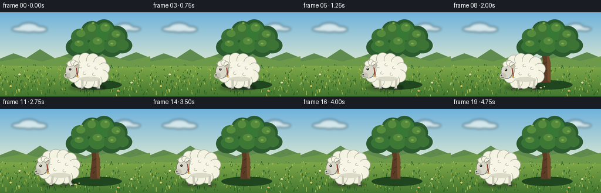
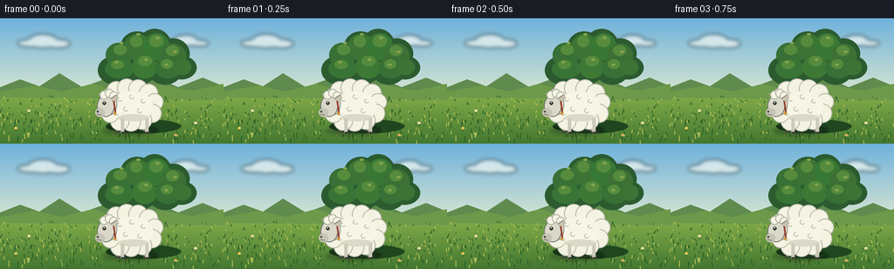

CODING AGENTS AS PIXEL WORLD MODELS
traex/GPT-5.6-Sol · instance_preservation_0056
点击播放 · 原生 RGB 像素
逐轮保存的候选
回放视频、检查图与代码变化。
每份候选均可单独播放。实际图片检查记录在下方工具轨迹中。
候选 01播放与检查图
点击播放 · 原生 RGB 像素


展开代码变化
--- 上一保存版本
+++ 本次保存版本
@@ -0,0 +1,249 @@
+"""Procedurally render the requested five-second sheep animation.
+
+The scene is deliberately drawn at 3x resolution and downsampled so that the
+small output retains clean, illustrated edges. All scenery is static; the
+same sheep rig is translated from directly in front of the trunk to its left.
+"""
+from pathlib import Path
+import math
+
+import numpy as np
+from PIL import Image, ImageDraw, ImageFilter
+
+import artifact_io
+
+
+W, H, N = 256, 144, 20
+S = 3
+
+
+def B(box):
+ return tuple(int(round(v * S)) for v in box)
+
+
+def P(points):
+ return [(int(round(x * S)), int(round(y * S))) for x, y in points]
+
+
+def ellipse(draw, box, fill, outline=None, width=1):
+ draw.ellipse(B(box), fill=fill, outline=outline, width=max(1, width * S))
+
+
+def line(draw, points, fill, width=1, joint="curve"):
+ draw.line(P(points), fill=fill, width=max(1, width * S), joint=joint)
+
+
+def polygon(draw, points, fill):
+ draw.polygon(P(points), fill=fill)
+
+
+def make_background():
+ """A softly textured, fixed late-afternoon meadow."""
+ h, w = H * S, W * S
+ yy = np.arange(h)[:, None]
+ arr = np.zeros((h, w, 3), dtype=np.float32)
+ # clear blue sky, gently warmer toward the horizon
+ horizon = 91 * S
+ sky_t = np.clip(yy / horizon, 0, 1)
+ top = np.array([111, 178, 220], dtype=np.float32)
+ low = np.array([220, 232, 209], dtype=np.float32)
+ sky = top[None, None, :] * (1 - sky_t[:, :, None]) + low[None, None, :] * sky_t[:, :, None]
+ arr[:] = sky
+ # foreground vertical green gradient
+ ground_t = np.clip((yy - horizon) / (h - horizon), 0, 1)
+ gtop = np.array([126, 168, 72], dtype=np.float32)
+ glow = np.array([67, 119, 48], dtype=np.float32)
+ ground = gtop[None, None, :] * (1 - ground_t[:, :, None]) + glow[None, None, :] * ground_t[:, :, None]
+ mask = yy >= horizon
+ arr[mask[:, 0], :, :] = ground[mask[:, 0], :, :]
+ im = Image.fromarray(np.uint8(np.clip(arr, 0, 255)), "RGB")
+
+ # distant hills and cloud wisps
+ d = ImageDraw.Draw(im, "RGBA")
+ polygon(d, [(0, 91), (0, 79), (23, 70), (45, 78), (68, 63), (94, 79),
+ (119, 70), (146, 81), (177, 67), (204, 79), (232, 68), (256, 78), (256, 94)],
+ (95, 139, 78, 255))
+ polygon(d, [(0, 91), (0, 84), (40, 77), (71, 84), (106, 75), (143, 86),
+ (182, 76), (220, 83), (256, 75), (256, 94)], (109, 153, 74, 255))
+
+ cloud = Image.new("RGBA", im.size, (0, 0, 0, 0))
+ cd = ImageDraw.Draw(cloud, "RGBA")
+ for box in [(20, 24, 56, 33), (32, 18, 66, 34), (52, 24, 80, 34),
+ (183, 24, 210, 31), (199, 19, 226, 32), (217, 25, 239, 32)]:
+ cd.ellipse(B(box), fill=(255, 255, 247, 155))
+ cloud = cloud.filter(ImageFilter.GaussianBlur(2.2 * S))
+ im = Image.alpha_composite(im.convert("RGBA"), cloud)
+ d = ImageDraw.Draw(im, "RGBA")
+
+ # Fine meadow texture, seeded and therefore identical in every frame.
+ rng = np.random.default_rng(2417)
+ for _ in range(330):
+ x = float(rng.uniform(0, W))
+ y = float(rng.uniform(90, H))
+ length = float(rng.uniform(1.2, 5.2) * (0.4 + (y - 90) / 54))
+ col = (40, 94, 38, int(rng.integers(35, 100))) if rng.random() < .62 else (185, 194, 87, 50)
+ line(d, [(x, y), (x + rng.uniform(-1.3, 1.3), y - length)], col, 1)
+ # A few restrained flowers help establish scale.
+ for x, y, c in [(18, 126, (247, 213, 92, 220)), (224, 120, (245, 236, 188, 220)),
+ (33, 106, (245, 236, 188, 180)), (201, 134, (230, 184, 105, 190))]:
+ line(d, [(x, y + 4), (x, y)], (47, 105, 43, 180), 1)
+ ellipse(d, (x - 1.6, y - 1.2, x + 1.6, y + 1.2), c)
+ ellipse(d, (x - .45, y - .45, x + .45, y + .45), (174, 115, 49, 230))
+ return im
+
+
+def draw_tree(im):
+ """Draw the tree before the sheep so the initial sheep is unambiguously in front."""
+ d = ImageDraw.Draw(im, "RGBA")
+ # broad fixed cast shadow
+ ellipse(d, (121, 116, 207, 132), (31, 70, 31, 55))
+
+ # Trunk silhouette and branching structure.
+ polygon(d, [(153, 120), (157, 83), (153, 59), (161, 42), (168, 50),
+ (165, 68), (170, 87), (170, 120)], (91, 59, 37, 255))
+ polygon(d, [(158, 77), (138, 59), (140, 54), (161, 67)], (93, 59, 36, 255))
+ polygon(d, [(164, 65), (184, 48), (187, 51), (168, 75)], (83, 54, 34, 255))
+ polygon(d, [(155, 62), (150, 42), (154, 39), (163, 66)], (105, 67, 39, 255))
+ # warm side and bark marks
+ polygon(d, [(163, 48), (165, 117), (170, 120), (170, 86), (165, 66), (168, 49)], (116, 75, 43, 170))
+ for pts in [[(159, 88), (164, 85)], [(157, 102), (164, 99)], [(165, 72), (169, 69)],
+ [(158, 111), (161, 107)], [(160, 55), (163, 61)]]:
+ line(d, pts, (57, 43, 29, 145), 1)
+
+ # Canopy, with a dark silhouette first and clustered leaf masses on top.
+ clusters = [
+ (123, 30, 158, 62), (138, 15, 176, 50), (158, 12, 196, 50),
+ (179, 23, 217, 58), (112, 43, 151, 76), (140, 40, 181, 75),
+ (169, 40, 209, 76), (190, 43, 225, 70)
+ ]
+ for box in clusters:
+ ellipse(d, box, (43, 91, 47, 255))
+ mids = [
+ (121, 28, 151, 56), (142, 18, 173, 48), (164, 17, 194, 48),
+ (183, 29, 213, 57), (120, 47, 153, 69), (151, 43, 180, 69),
+ (177, 45, 207, 69), (199, 47, 219, 65)
+ ]
+ for i, box in enumerate(mids):
+ ellipse(d, box, (56 + (i % 2) * 5, 112 + (i % 3) * 4, 53, 255))
+ lights = [(130, 30, 145, 42), (149, 20, 163, 33), (171, 19, 187, 33),
+ (190, 31, 205, 43), (127, 48, 142, 58), (158, 43, 174, 55),
+ (184, 47, 198, 58)]
+ for box in lights:
+ ellipse(d, box, (86, 139, 61, 205))
+ # selective sunlit leaf dabs
+ for x, y in [(139, 28), (158, 18), (180, 22), (200, 38), (133, 50), (167, 47), (190, 53)]:
+ ellipse(d, (x - 2, y - 1, x + 2.5, y + 1.6), (130, 164, 77, 150))
+
+
+def draw_sheep(im, cx, phase, moving, frame_idx):
+ """Draw one consistent, articulated sheep rig facing left."""
+ d = ImageDraw.Draw(im, "RGBA")
+ bob = (math.sin(phase * 2) * 0.75) if moving else 0.0
+ cy = 101 + bob
+
+ # soft contact shadow follows the sheep
+ shadow = Image.new("RGBA", im.size, (0, 0, 0, 0))
+ sd = ImageDraw.Draw(shadow, "RGBA")
+ ellipse(sd, (cx - 33, 124, cx + 29, 134), (27, 53, 28, 90))
+ shadow = shadow.filter(ImageFilter.GaussianBlur(2.0 * S))
+ im.alpha_composite(shadow)
+ d = ImageDraw.Draw(im, "RGBA")
+
+ # Leg swing is confined to the legs, preserving body identity.
+ swing = math.sin(phase) * 4.0 if moving else 0.0
+ # far legs
+ for x0, dx in [(cx - 16, -swing), (cx + 16, swing)]:
+ line(d, [(x0, cy + 16), (x0 + dx * .45, 125), (x0 + dx, 130)], (153, 153, 137, 255), 4)
+ line(d, [(x0 + dx - 2, 130), (x0 + dx + 3, 130)], (63, 65, 57, 255), 2)
+
+ # tail behind body
+ ellipse(d, (cx + 24, cy - 10, cx + 36, cy + 3), (226, 224, 202, 255), (171, 172, 157, 255), 1)
+
+ # Main wool fleece: stable silhouette made from overlapping fixed puffs.
+ fleece_edge = (175, 178, 165, 255)
+ ellipse(d, (cx - 27, cy - 20, cx + 29, cy + 20), (238, 237, 218, 255), fleece_edge, 1)
+ puffs = [(-24, -10, 11), (-17, -18, 11), (-5, -21, 11), (8, -20, 11),
+ (20, -15, 11), (27, -5, 10), (24, 8, 11), (13, 16, 11),
+ (0, 18, 11), (-13, 17, 11), (-24, 9, 10), (-29, -1, 9)]
+ for ox, oy, r in puffs:
+ ellipse(d, (cx + ox - r, cy + oy - r, cx + ox + r, cy + oy + r),
+ (244, 243, 226, 255), fleece_edge, 1)
+ # unified inner fill and gently shaded underside
+ ellipse(d, (cx - 24, cy - 17, cx + 25, cy + 17), (247, 246, 230, 255))
+ ellipse(d, (cx - 16, cy + 9, cx + 21, cy + 17), (219, 218, 200, 80))
+ # wool curl marks, same on every frame
+ for ox, oy in [(-13, -8), (1, -11), (14, -6), (-6, 3), (10, 5), (-17, 8)]:
+ # small C-shaped arc
+ d.arc(B((cx + ox - 3, cy + oy - 2.5, cx + ox + 3, cy + oy + 2.5)),
+ 30, 260, fill=(187, 189, 175, 140), width=1 * S)
+
+ # near legs over fleece edge
+ for x0, dx in [(cx - 10, swing), (cx + 18, -swing)]:
+ line(d, [(x0, cy + 14), (x0 + dx * .45, 126), (x0 + dx, 131)], (204, 202, 185, 255), 4)
+ line(d, [(x0 + dx - 1, 131), (x0 + dx + 4, 131)], (55, 58, 52, 255), 2)
+
+ # Neck and head, always oriented left. Pale face keeps the animal clearly white.
+ ellipse(d, (cx - 32, cy - 15, cx - 16, cy + 10), (225, 223, 205, 255), (148, 151, 142, 255), 1)
+ # far ear
+ polygon(d, [(cx - 27, cy - 11), (cx - 38, cy - 15), (cx - 30, cy - 5)], (177, 174, 159, 255))
+ line(d, [(cx - 29, cy - 10), (cx - 35, cy - 13)], (115, 113, 104, 180), 1)
+ # muzzle/head
+ ellipse(d, (cx - 39, cy - 13, cx - 19, cy + 12), (218, 217, 201, 255), (111, 116, 109, 255), 1)
+ ellipse(d, (cx - 41, cy + 2, cx - 30, cy + 12), (197, 196, 181, 255))
+ # forehead wool cap
+ for ox, oy, r in [(-31, -13, 5), (-25, -15, 5), (-20, -12, 5)]:
+ ellipse(d, (cx + ox - r, cy + oy - r, cx + ox + r, cy + oy + r),
+ (245, 244, 227, 255), (170, 172, 159, 255), 1)
+ # near ear
+ polygon(d, [(cx - 24, cy - 9), (cx - 15, cy - 15), (cx - 18, cy - 5)], (203, 196, 177, 255))
+ line(d, [(cx - 23, cy - 9), (cx - 17, cy - 13)], (135, 127, 115, 200), 1)
+ # eye, glint, nostril, and gentle mouth
+ ellipse(d, (cx - 32.5, cy - 5.5, cx - 28.5, cy - 1.5), (48, 48, 43, 255))
+ ellipse(d, (cx - 31.5, cy - 5, cx - 30.3, cy - 3.8), (255, 255, 245, 255))
+ ellipse(d, (cx - 39.5, cy + 5, cx - 37, cy + 7), (75, 76, 70, 230))
+ line(d, [(cx - 39, cy + 9), (cx - 34, cy + 10)], (102, 99, 91, 220), 1)
+ # a constant rust-red collar is an identity cue
+ line(d, [(cx - 20, cy - 6), (cx - 18, cy + 8)], (151, 66, 48, 255), 2)
+ ellipse(d, (cx - 20, cy + 7, cx - 17, cy + 10), (213, 159, 60, 255))
+
+ # Sparse dust motes only while actually walking.
+ if moving and abs(swing) > 1.5:
+ alpha = int(70 * min(1, abs(swing) / 4))
+ ellipse(d, (cx + 27, 128, cx + 31, 130), (205, 190, 130, alpha))
+ ellipse(d, (cx + 34, 126, cx + 36, 128), (205, 190, 130, alpha // 2))
+
+
+def smoothstep(t):
+ t = max(0.0, min(1.0, t))
+ return t * t * (3 - 2 * t)
+
+
+def render():
+ bg = make_background()
+ frames = []
+ # Four-frame establishing hold, twelve-frame walk, four-frame destination hold.
+ start_x, end_x = 150.0, 82.0
+ for i in range(N):
+ im = bg.copy()
+ draw_tree(im)
+ if i <= 3:
+ progress = 0.0
+ elif i >= 15:
+ progress = 1.0
+ else:
+ progress = smoothstep((i - 3) / 12.0)
+ cx = start_x + (end_x - start_x) * progress
+ moving = 4 <= i <= 14
+ # About two and a half readable walking cycles during translation.
+ phase = (i - 3) * (math.pi / 2.25) if moving else 0.0
+ draw_sheep(im, cx, phase, moving, i)
+ out = im.convert("RGB").resize((W, H), Image.Resampling.LANCZOS)
+ frames.append(np.asarray(out, dtype=np.uint8))
+ return np.stack(frames)
+
+
+if __name__ == "__main__":
+ case_dir = Path(__file__).resolve().parent
+ frames = render()
+ artifact_io.save(frames, case_dir)
+ print(f"saved {len(frames)} RGB frames at {W}x{H}")
可观测工具轨迹
实际执行的命令与返回图片。
命令 1exit 0
/bin/bash -lc "cat prompt.txt && printf '\\n---RULES---\\n' && cat GENERATION_RULES.md && printf '\\n---SPEC---\\n' && cat task_spec.json"
命令 2exit 0
/bin/bash -lc "find . -maxdepth 2 -type f -printf '%p %s bytes\\n' | sort && printf '\\nTOOLS\\n' && command -v ffmpeg || true && command -v python3 || true"
命令 3exit 0
/bin/bash -lc 'cat artifact_io.py'
命令 4exit 0
/bin/bash -lc "python3 generate.py && python3 - <<'PY'
from PIL import Image
import numpy as np
z=np.load('pixels.npz')['pixels']
print('packed',z.shape,z.dtype,'unique first',len(np.unique(z[:,:,0])))
print('files',Image.open('frames/00.png').mode,Image.open('frames/00.png').size)
PY"保存候选 1 份；完成命令 4 次；可验证图片返回 0 张。原始 API 响应与完整日志保留在本地。